library(ggplot2)
library(lattice)
library(dplyr)
library(gridExtra)
library(brms)
library(bayesplot)An Analysis of Patient Mental Health during the COVID-19 Pandemic
Background
The coronavirus pandemic (COVID-19) and the associated lockdown measures brought a period of social changes that worsened the mental health of the general population. Many studies on this topic have determined that the mental health of the young adult population might have been particularly affected compared to other age-groups (middle-aged and elderly individuals). There are many common adaptive and nonadaptive coping strategies for dealing with the pandemic that have already been documented. In order to further understand the relative success of these coping strategies, it is necessary to further investigate these coping mechanisms in different age-groups systemically. This is a necessary step to determine which specific coping mechanisms led to an increase in patient mental health during the COVID-19 pandemic.
Dataset Overview
Study Type: Longitudinal Survey
Population: Lived in Japanese prefectures under special precautions that were related to the COVID-19 pandemic: Tokyo, Saitama, Chiba, Kanagawa, Osaka, Hyogo, Fukuoka, Hokkaido, Ibaraki, Ishikawa, Gifu, Aichi, and Kyoto
Timepoints: Three surveys were conducted: July 2020, September 2020 and January 2021
Response Variable: Patient Mental Health Questionnaire-9 (PHQ-9), a clinical diagnostic measure of mental health (score from 0-27), a higher score indicates more severe depression
Covariates: Demographic information (age, sex , residential areas, marital status, household-income, employment status, economically impact) , anger control scale (0-21, higher score indicates greater restraint of anger), state anger scale (0-30, higher scores represent higher anger), and coping strategy clinical sub-scale items from the Brief Coping Orientation Scale (Religion, substance use, use of instrumental support etc.).
Dataset size: 1468 patients, 23 covariates
Questions of Interest
How do changes in patient mental health over time during the COVID-19 pandemic differ between the three different age-groups (young adults (20-39), middle-aged adults (40-64) and older adults (65-79))?
How do general demographic characteristics (sex, financial stability, relationship status) play a role in influencing patient mental health?
Which coping mechanisms seem to be associated with an increase in patient mental health (quantified by a low PHQ score)
Exploratory Data Analysis
We first plot the PHQ scores against time for a random sample of 50 patients. From the following figure, we see that there is a high level of variation at the individual patient level.
# Sample 50 random id's
sample_ids <- sample(covid_phq$ID, 50)
# Plot
xyplot(PHQ ~ time | ID,
data= covid_phq[covid_phq$ID %in% sample_ids, ],
panel=function(x,y){
panel.xyplot(x, y, type = c("l", "p"))
}, ylim=c(-1, 28), as.table=T)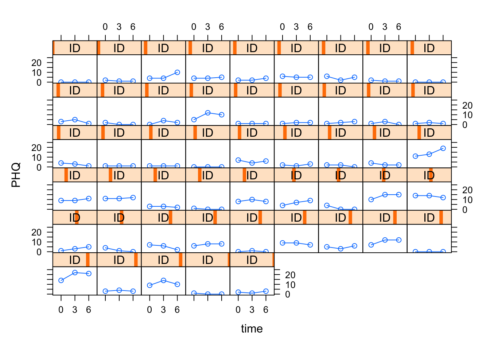
We can then plot a spaghetti plot stratified by the three different age groups.
covid_phq %>% group_by(time, AGE) %>%
mutate(mean= mean(PHQ), sd= sd(PHQ)) %>%
ungroup() %>%
ggplot(aes(x= time, y= PHQ, group = ID)) +
geom_line(alpha = 0.1) +
geom_point(alpha = 0.1, shape = 21) +
facet_grid(. ~ AGE) +
xlab("Month") + ylab("PHQ-9 Score") +
stat_summary(fun=mean,geom="line",lwd= 2,aes(group=1), colour = "blue") +
geom_linerange(alpha=0.03, mapping=aes(x=time, ymin=mean-sd, ymax=mean+sd), color="blue")+
theme(axis.title.y=element_blank()) + theme_bw()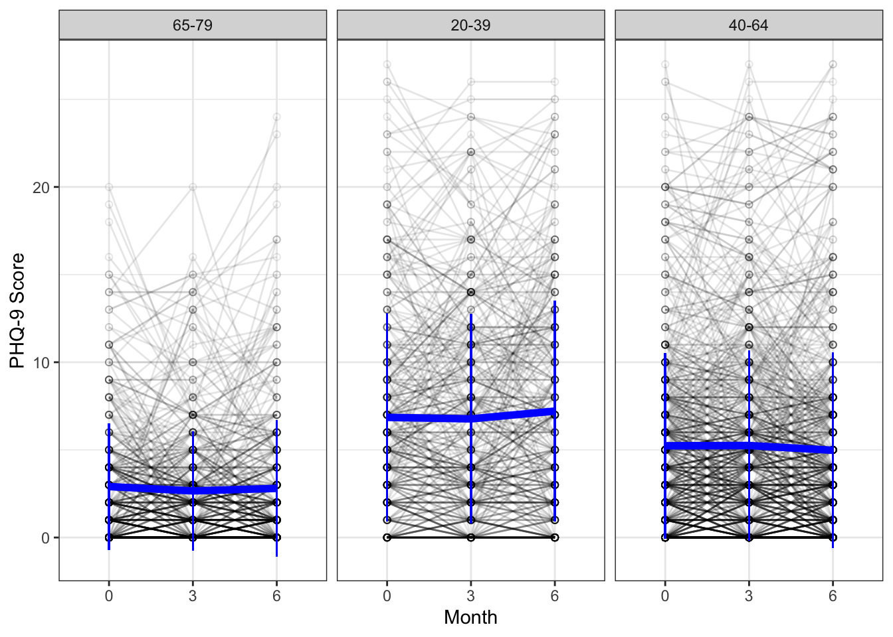
We do see a slight increasing trend of PHQ-9 scores over the three months in the young adult age-group (20-39) compared to the other two age-groups.
Next we can look at the relationship between the demographic variables and PHQ.
target_variables <- names(covid_phq[, c(4:11)])
my_plots_list <- lapply(target_variables, function(each_variable) {
ggplot(covid_phq, aes_string(each_variable, "PHQ")) + geom_boxplot() + theme_bw()
})
gridExtra::grid.arrange(grobs = my_plots_list)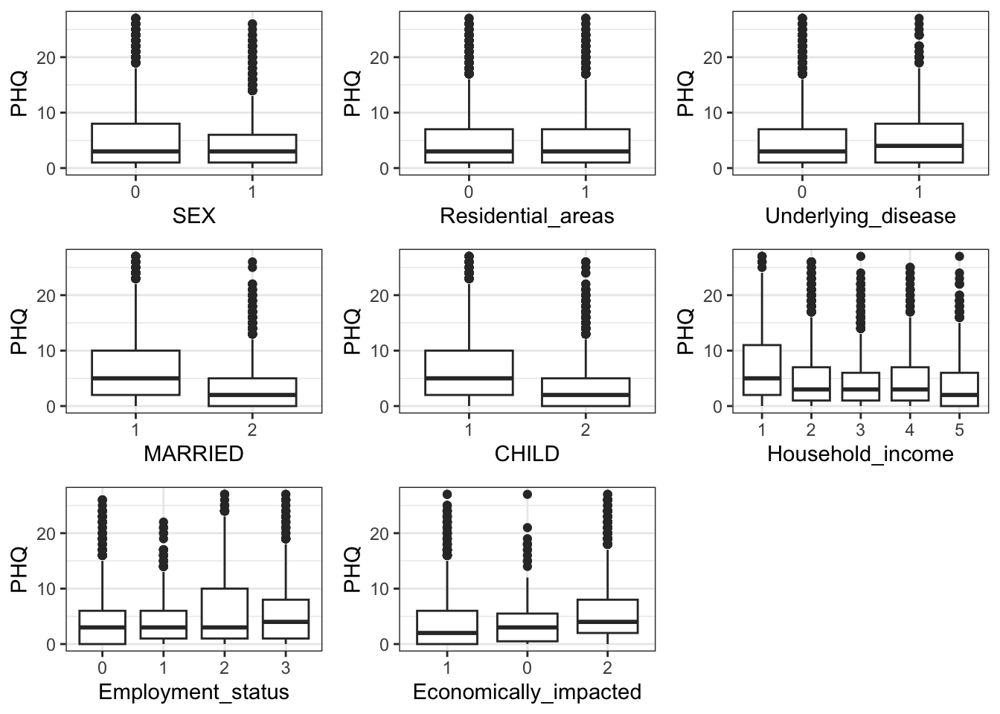
Although there are a lot of points beyond the quantile + IQR range, we do see some tentative trends: married people seem to have a relatively lower PHQ score, there may be a decreasing trend in PHQ score with an increase in Household income. A negative economic impact (2) also seems to have a higher PHQ score compared to the other two categories. Perhaps only residential areas seems like it may not have an impact on the PHQ score.
Finally we can look at the relationship between the item score variables and PHQ over time for 4 of the scale items (Humor, Substanceuse, Venting, and Anger Control). I did not take the time to code this more elegantly, and so generated one plot from one ggplot call instead of looping over the variables as I should have. I have the code for one variable displayed below and the final call to grid.arrange.
# Substance use
long1_Substanceuse <- covid_phq %>%
group_by(Substanceuse, time) %>%
summarise(mean = mean(PHQ), sd = sd(PHQ))
p1 <- long1_Substanceuse %>%
ggplot(aes(factor(Substanceuse), mean, group = time, colour = time)) + geom_line() + geom_point() +
theme_bw() + labs(y = "Mean PHQ Score", x = "Substance Use Score", colour = "Month")
# Arrange plots
grid.arrange(p1, p2, p3, p4, nrow = 2, ncol = 2)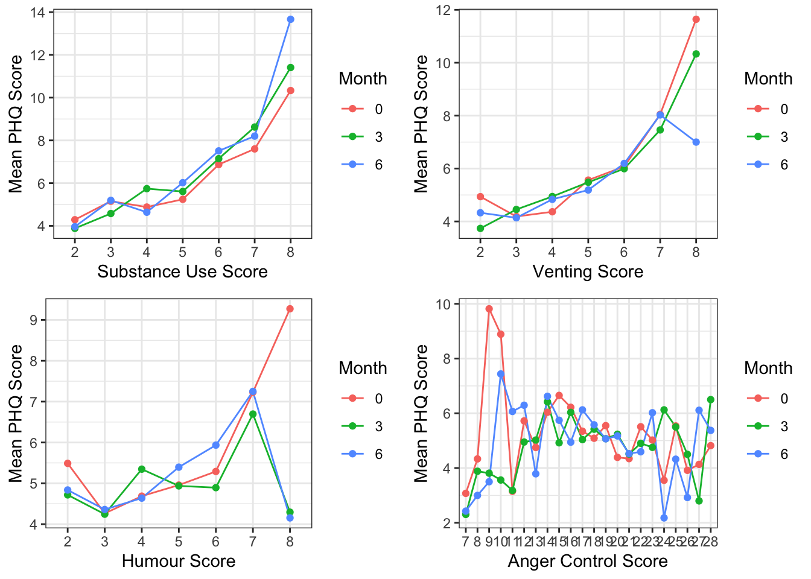
Overall, it seems as though substance score shows an increasing trend with the mean PHQ score. For both humour and venting score, either just the 3rd or both the 3rd and 6th show a decreasing trend with PHQ initially, while the PHQ score goes up again eventually in January. This is the effect of time, and averaging over time, these two scales show an overall decreasing trend. Anger Control does not necessarily seem to show any strong linear relation with the PHQ score.
Model
The response variable of interest is the PHQ score, which is a bounded, positive score from 0-27. We can take a look at the observed distribution of the response variable.
covid_phq %>%
ggplot(aes(x = PHQ)) +
geom_histogram(aes(y = ..density..),
colour = 1, fill = "grey") +
geom_density() + theme_bw()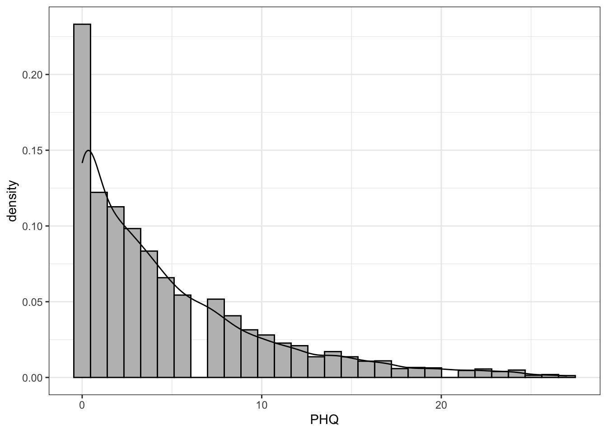
We see that there are a high-proportion of respondents with a score of 0, indicating that some sort of zero-inflated model would likely be a good fit in this case.
The PHQ-9 questionnaire contains 9 questions, each of which can obtain possible scores of 1, 2 and 3. Thus, the range of possible values falls between 0-27. One simple way to model these scores sticking with the traditional glm families could be to use a Poisson distribution, since we can think of the scores as aggregated counts. We could also potentially use a lognormal or a gamma distribution.
Another strategy is to think of each of the 27 possibilities of scores as 27 trials. A patient could thus theoretically have a chance to score a success (1) in each “trial”. This is akin to an aggregated Binomial sampling distribution, and additionally respects the bounded nature of the data in that 27 is the upper bound. Thus, we use a zero-inflated binomial model.
We use the {brms} package to fit a Bayesian Mixed Effects model. {brms} uses STAN as its backend, which uses the Hamiltonian Monte Carlo no-U turn sampler (HMC-NUTS). Through a Bayesian approach, we can specify weakly regularizing priors/informative priors when needed for our many coefficients since we will fit quite a few random effects and covariates. We can also obtain posterior distributions for the standard deviation of the random intercept, the coefficients of the age contrasts and so on for improved inference for our questions of interest.
Model Specification and Identifiability
Let \(\text{PHQ}_{ij}\) denote the PHQ scores of interest for \(i\), \(i = 1,…., N\) for subjects \(j = 1,….,J\).
[Likelihood]
\[\text{PHQ}_{ij} = \begin{cases} 0,& \text{with probability} \ zi\\ \mathcal{B}(27, \pi_{ij}), & \text{with probability} \ (1-zi) \end{cases}\]
\(\text{logit}(\pi_{ij}) = \alpha_{j[i]} + \boldsymbol{\beta_{\{k = 1,..,18\}}} \ {\text{\{Demographic and Scale variables\}}}_{ij}\)
[Individual-level random effects]
\[\alpha_j \sim \mathcal{N}(0, {\sigma^2}_{\alpha_{j}})\]
where \(zi\) modelled as a parameter independent of covariates
Typically, a zero-inflated logistic regression would result in a mixture of two Bernoulli distributions. This model would not necessarily be indentifiable unless strong constraints are imposed on either one of the Bernoulli probabilities, since there would not be enough information to disentangle the individual contributions of the “logistic” and “zero-inflated” components. However, in our setting, we have essentially an “aggregated” logistic regression, where we have information about an additional parameter \(N\) (the number of trials). Thus, particularly in our case, where we model \(zi\) as a parameter independent of covariates, it is easy to see that the model would estimate \(zi\) to be 1/27 (i.e the random chance in obtaining zero from a distribution of possibilities from 0-27). We can confirm below that the model estimates \(zi\) to be 1/27 = 0.03.
Priors
priors <- c(prior(normal(0.3, 0.5), class = "b", coef = "AGE20M39"),
prior(normal(0.1, 0.5), class = "b", coef = "AGE40M64"),
prior(normal(0, 0.5), class = "b", coef = "AngerControl"),
prior(normal(-0.1, 1), class = "b", coef = "Venting"),
prior(normal(-0.1, 0.5), class = "b", coef = "Economically_impacted0"),
prior(normal(0.1, 0.5), class = "b", coef = "Economically_impacted2"),
prior(normal(0.1, 0.7), class = "b", coef = "time6:AGE40M64"),
prior(normal(0.1, 0.7), class = "b", coef = "time6:AGE20M39"),
prior(normal(0, 1), class = "b", coef = "time6"),
prior(normal(0, 1), class = "b", coef = "time3"),
prior(normal(0, 1), class = "b", coef = "time3:AGE40M64"),
prior(normal(0, 1), class = "b", coef = "time3:AGE20M39"),
prior(normal(0.1, 1), class = "b", coef = "StateAnger"),
prior(normal(0, 1), class = "b", coef = "SEX1"),
prior(normal(0, 1), class = "b", coef = "SelfBlame"),
prior(normal(0, 0.5), class = "b", coef = "Residential_areas1"),
prior(normal(0, 1), class = "b", coef = "Religion"),
prior(normal(0, 1), class = "b", coef = "Planning"),
prior(normal(-0.1, 0.7), class = "b", coef = "MARRIED2"),
prior(normal(-0.1, 0.7), class = "b", coef = "Humor"),
prior(normal(0.1, 0.7), class = "b", coef = "Employment_status1"),
prior(normal(0.1, 0.5), class = "b", coef = "Employment_status2"),
prior(normal(0.1, 0.5), class = "b", coef = "Employment_status3"),
prior(normal(-0.1, 0.7), class = "b", coef = "Household_income2"),
prior(normal(-0.1, 0.7), class = "b", coef = "Household_income3"),
prior(normal(-0.1, 0.7), class = "b", coef = "Household_income4"),
prior(normal(-0.1, 0.7), class = "b", coef = "Household_income5"),
prior(normal(-0.1, 0.7), class = "b", coef = "Activecoping"),
prior(normal(0, 1), class = "b", coef = "Substanceuse"),
prior(normal(-0.1, 0.7), class = "b", coef = "Useofinstrumentalsupport"),
prior(normal(-0.1, 0.7), class = "b", coef = "Positivereframing"),
prior(normal(-0.1, 0.7), class = "b", coef = "Useofemotionalsupport"),
prior(normal(0,4), class = "Intercept"),
prior(student_t(3,0, 1), class = "sd"),
prior(beta(2, 2), class = "zi"))This blog post led me to try and put somewhat informative priors on all the coefficients. For example, a \(\mathbb{N}(0.3,0.5)\) prior was put on the AGE20M39 contrast because in comparison to the reference level (AGE65M79), we have reasonable knowledge to believe that there would be an overall increase in the PHQ score. Weakly regularizing \(\mathbb{N}(0,1)\) priors were put on all the other coefficients for which there was no strong prior knowledge. A weakly informative student-t (3, 0, 1) prior was put on the random intercept, which is fairly permissive for large individual level variation. The z_i parameter models the proportion of zeroes, and the \(\text{Beta}(2, 2)\) is again a weakly informative prior over 0 and 1 that has a slightly shifted center away from 0.
Model Fitting
# Use the cmdstanr backend for Stan because it's faster
options(mc.cores = 4,
brms.backend = "cmdstanr")
fit2 <- brm((PHQ|trials(27) ~ time*AGE + SEX + MARRIED +
Residential_areas + Household_income + Employment_status +
Economically_impacted + Religion + Venting + Humor +
StateAnger + AngerControl + Behavioraldisengagement +
Planning + Acceptance + SelfBlame + Activecoping + Substanceuse + Useofinstrumentalsupport + Positivereframing + Useofemotionalsupport + (1|ID)), data= covid_phq,family = zero_inflated_binomial(), chains = 4, iter = 10000, warmup = 5000, prior = priors)We then fit the model with 4 chains using the {brms} package with the cmdstanr backend. The model fits reasonably quickly taking around 5 minutes for each chain.
Posterior Predictive and Convergence Checks
We can do a quick check to see if our model makes sense. We draw 100 simulated datasets from our posterior distribution and plot this against the observed distribution to see how well the posterior has captured the distribution. We do not see any major systematic discrepancies of the observed data from what can be predicted from the model.
pp_check(fit2, ndraws = 100) + theme_bw() + xlim(-2, 30)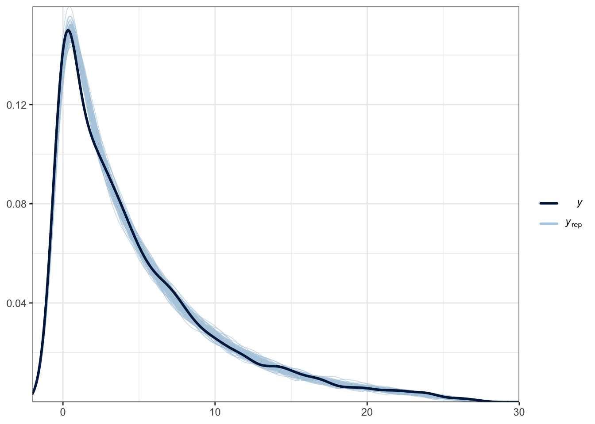
The model fit did not indicate any convergence issues and none of the \(\hat{R}\) values exceeded 1 significantly. None of the ratios of the effective sizes of all the covariates against the total sample size (\(\frac{N_{eff}}{N}\)) drop below 0.1 (the lowest drop to 0.5).
We can also look at the traceplots for some selected parameters to assess convergence. We seem to observe good mixing of the four chains.
color_scheme_set("mix-blue-pink")
posterior_chains <- as.array(fit2)
fargs <- list(ncol = 4, labeller = label_parsed)
pars <- c("zi", "sd_ID__Intercept", "b_Economically_impacted0", "b_Household_income2")
chains_trace <- mcmc_trace(posterior_chains, pars = pars, n_warmup = 300, facet_args = fargs)
chains_trace + theme_bw()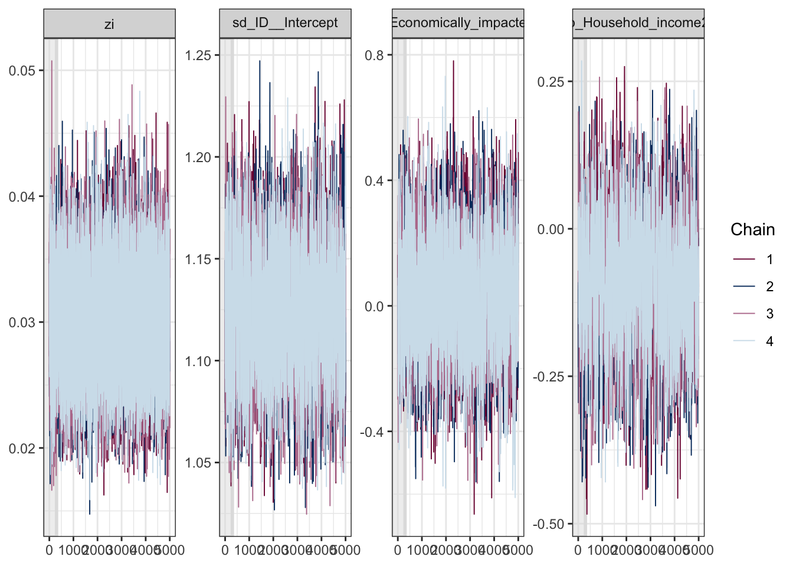
Visualizing Results
We can effectively visualize our results using the {bayesplot} package. We can plot the predicted posterior density distributions of the estimated parameters for both the demographic and the scale variables with 80 \(%\) \(\%\) density intervals. We can additionally plot the density distribution of the random effects standard deviation, as well as \(zi\) (the mixing proportion).
posterior <- as.matrix(fit2)
mcmc_areas(posterior, pars = c("b_SEX1", "b_MARRIED2", "b_Residential_areas1","b_Household_income5", "b_Employment_status1",
"b_Economically_impacted2"), prob = 0.95) + theme_bw() + labs(x = "Estimated Coefficient values") +
scale_y_discrete(labels=c("b_SEX1" = "Females - Males", "b_MARRIED2" = "Single - Married", "b_Residential_areas1" = "No lockdown - Lockdown", "b_Household_income5" = "Lowest income - Highest income bracket",
"b_Employment_status1" = "Full-time work - No regular job", "b_Economically_impacted2" = "No Economic Impact - Negative Impact"
)) + theme(text = element_text(size=20)) + geom_vline(xintercept = 0, colour = "blue", linetype = "dotted")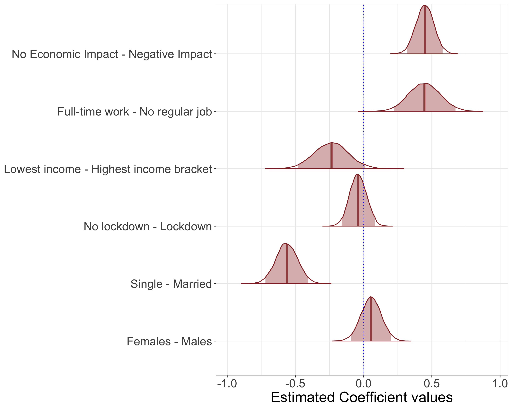
Fig.1: Posterior Density Distributions of Demographic Variables
mcmc_areas(posterior, pars = c("b_Religion", "b_Venting", "b_Humor",
"b_StateAnger", "b_AngerControl",
"b_Behavioraldisengagement", "b_Planning",
"b_Acceptance", "b_SelfBlame", "b_Activecoping", "b_Substanceuse", "b_Positivereframing", "b_Useofinstrumentalsupport"), prob = 0.80) + theme_bw() + labs(x = "Estimated Coefficient values") +
scale_y_discrete(labels=c("b_Religion" = "Religion", "b_Venting" = "Venting", "b_Humor" = "Humor",
"b_StateAnger" = "State Anger", "b_AngerControl" = "Anger Restraint",
"b_Behavioraldisengagement" = "Behavioural disengagement", "b_Planning" = "Planning",
"b_Acceptance" = "Acceptance", "b_SelfBlame" = "Self-Blame", "b_Activecoping" = "Active coping",
"b_Substanceuse" = "Substance Use", "b_Useofinstrumentalsupport" = "Use of instrumental support",
"b_Positivereframing" = "Positive Reframing"
)) + theme(text = element_text(size=20)) + geom_vline(xintercept = 0, colour = "blue",
linetype = "dotted")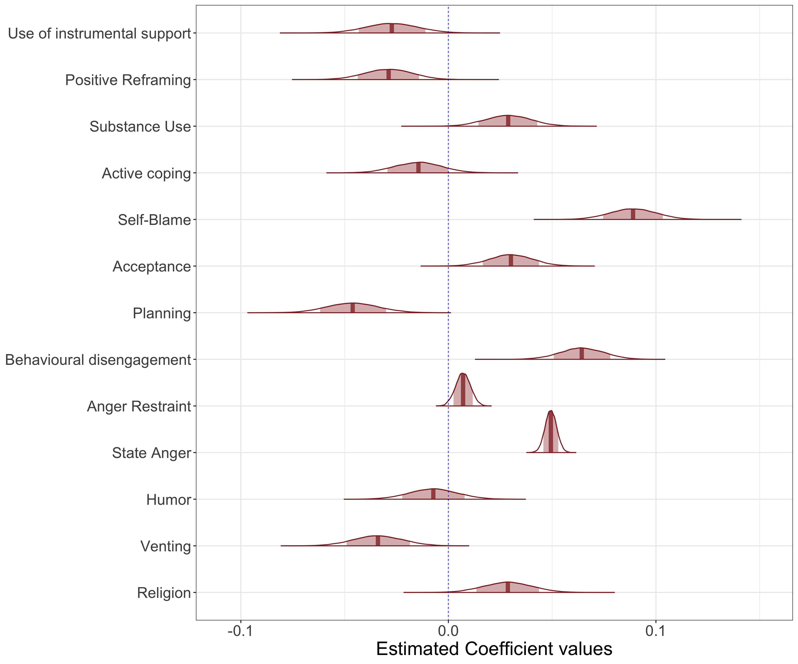
Fig.2: Posterior Density Distributions of Coping Scale and Anger Scale Variables
mcmc_areas(posterior, pars = c("sd_ID__Intercept"), prob = 0.8) + theme_bw() + labs(x = "Random Effect Intercept Standard Deviation")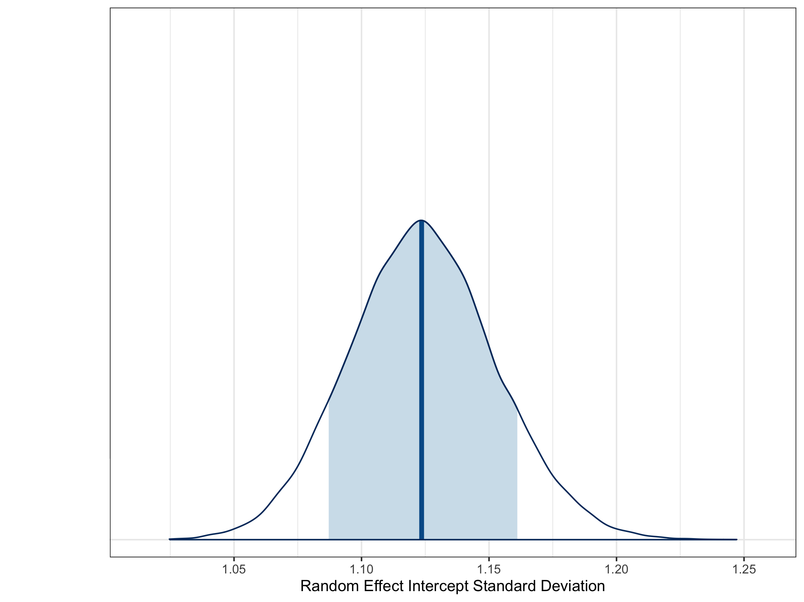
Fig.3: Posterior Density Distributions of Random Effect Intercept Standard Deviation
mcmc_areas(posterior, pars = c("zi"), prob = 0.8) + theme_bw() + labs(x = "Estimated Proportion of Structural Zeroes")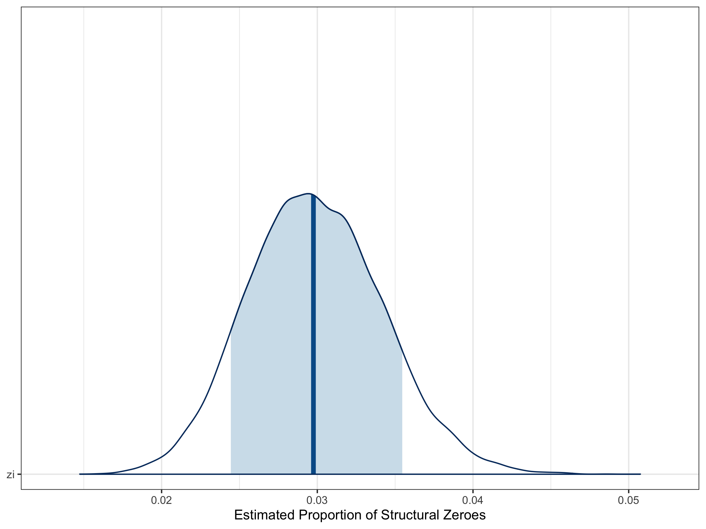
Fig.4: Posterior Density Distributions of \(zi\) (mixing proportion)
Answering our questions of interest
Looking at the model summary, it is clear that a higher household income, working full-time (in contrast to not having a job), and being married seem to all be relatively associated with a lower PHQ score.
In terms of the coping strategies, venting, planning, the use of instrumental support and positive reframing seem to lead to a decrease in overall PHQ score, while use of emotional support, substance use, acceptance, self-blame, behavioural disengagement, higher anger and religion seem to be ineffective coping strategies, as they are associated with a higher PHQ score.
Finally, we do see a higher PHQ score associated with the younger age-groups, particularly young adults (20-39) relative to senior adults. We also see an interaction between age and the effect of time. In particular, relative to senior adults, young adults seem to have particularly high PHQ scores in month 6, while for middle-aged adults seem to have an increased PHQ score in month 3.
Notes
Something that could be added to this analysis is more rigorous model selection and checks. Ideally, we should have compared this full model (which is relatively over-parameterized) with a reduced model after removing coefficients in a step-wise manner through K-fold cross-validation. We can also separately model the zero-generating proportion with covariates, as well as specifically assess the young adult population to look at which coping mechanisms were successful for them in particular.
References
Fukase et al., 2022. Age-related differences in depressive symptoms and coping strategies during the COVID-19 pandemic in Japan: A longitudinal study
Paul-Christian Bürkner (2017). brms: An R Package for Bayesian Multilevel Models Using Stan. Journal of Statistical Software, 80(1), 1-28. doi:10.18637/jss.v080.i01
Paul-Christian Bürkner (2018). Advanced Bayesian Multilevel Modeling with the R Package brms. The R Journal, 10(1), 395-411. doi:10.32614/RJ-2018-017
Paul-Christian Bürkner (2021). Bayesian Item Response Modeling in R with brms and Stan. Journal of Statistical Software, 100(5), 1-54. doi:10.18637/jss.v100.i05
Gabry J, Simpson D, Vehtari A, Betancourt M, Gelman A (2019). “Visualization in Bayesian workflow.” J. R. Stat. Soc. A_, 182, 389-402. doi: 10.1111/rssa.12378 (URL: https://doi.org/10.1111/rssa.12378).
Kay M (2023). tidybayes: Tidy Data and Geoms for Bayesian Models. doi: 10.5281/zenodo.1308151 (URL: https://doi.org/10.5281/zenodo.1308151), R package version 3.0.4, <URL: http://mjskay.github.io/tidybayes/>.
Gabry J, Simpson D, Vehtari A, Betancourt M, Gelman A (2019). “Visualization in Bayesian workflow.” _J. R. Stat. Soc. A_, *182*, 389-402. doi: 10.1111/rssa.12378 (URL: https://doi.org/10.1111/rssa.12378).